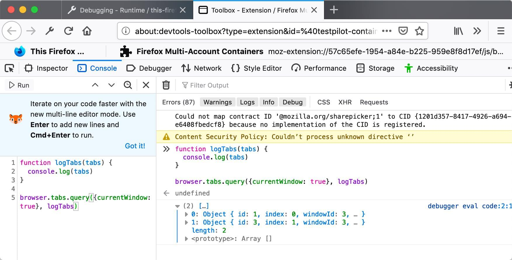

JavaScript APIs for WebExtensions can be used inside the extension's background scripts and in any other documents bundled with the extension, including browser action or page action popups, sidebars, options pages, or new tab pages. A few of these APIs can also be accessed by an extension's content scripts. (See the list in the content script guide.)
To use the more powerful APIs, you need to request permission in your extension's manifest.json.
You can access the APIs using the browser namespace:
function logTabs(tabs) {
console.log(tabs)
}
browser.tabs.query({currentWindow: true}, logTabs)
Many of the APIs are asynchronous, returning a {{JSxRef("Promise")}}:
function logCookie(c) {
console.log(c)
}
function logError(e) {
console.error(e)
}
let setCookie = browser.cookies.set(
{url: "https://developer.mozilla.org/"}
);
setCookie.then(logCookie, logError)
Note that this is different from Google Chrome's extension system, which uses the chrome namespace instead of browser, and which uses callbacks instead of promises for asynchronous functions. As a porting aid, the Firefox implementation of WebExtensions APIs supports chrome and callbacks as well as browser and promises. Mozilla has also written a polyfill which enables code that uses browser and promises to work unchanged in Chrome: https://github.com/mozilla/webextension-polyfill.
Firefox also implements these APIs under the chrome namespace using callbacks. This allows code written for Chrome to run largely unchanged in Firefox for the APIs documented here.
Microsoft Edge uses the browser namespace, but doesn't yet support promise-based asynchronous APIs. In Edge, for the time being, asynchronous APIs must use callbacks.
Not all browsers support all the APIs: for the details, see Browser support for JavaScript APIs and Chrome incompatibilities.
Throughout the JavaScript API listings, you will find short code examples that illustrate how the API is used. You can experiment using these examples—without needing to create a web extension—using the console in the Toolbox.
For example, here is the first code example on this page running in the Toolbox console in Firefox Developer Edition:

See below for a complete list of JavaScript APIs: